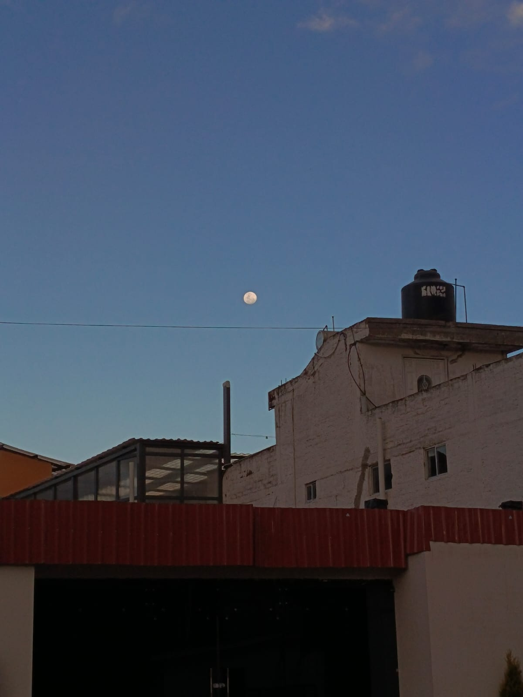

Cada día una notita para ti❤️.

Ayer fue un día que me partió en dos. En la mañana, mientras
estábamos ahí atrás de la
biblioteca, bajo ese árbol que ya siento tan nuestro, me sentía el hombre más afortunado.
Fueron dos horas donde el mundo desapareció entre besos y abrazos... te sentí tan mía que
por un
momento olvidé que estábamos distanciados. Mi corazón estaba a mil, con ganas de llevarte a
comer, al cine, a donde fuera con tal de no soltarte.
Pero la tarde fue un golpe de realidad demasiado frío. Cuando me pediste mi espacio, sentí
como si me desconectaran el alma. No te voy a mentir, lloré toda la hpta tarde. Me dolió
tanto
que terminé contándole a mi mamá, sintiendo que todo era mi culpa y que te perdía para
siempre.
Vine a casa, cociné algo para intentar que mi cabeza dejara de dar vueltas, pero fue
imposible.
Me dices que lo nuestro es solo 'lujuria', pero Katerin, yo vi tus ojos. Los ojos no mienten
como lo hace el orgullo, y yo sé que lo que sentimos es mucho más que eso. Amanecí con los
ojos
hinchados de tanto llorarte hasta las 3 am, pero también con la decisión de crear este
espacio.
Aquí te voy a dejar lo que siento, día tras día, para que cuando decidas leerme, sepas que
mi
amor por ti no tiene final.
Hoy desperté con un mensaje tuyo que me dejó pensando todo el día. Me
mandaste ese video diciéndome que te supere porque volviste a soñarme... y aunque
intentaste sonar segura, los dos sabemos que tu subconsciente te está delatando, Katerin.
Te lo dije y te lo repito: no me pidas que te supere cuando me has demostrado con besos y
abrazos que tú tampoco puedes. Me dices que todo es falso, pero nadie besa
con esa intensidad sin sentir que el mundo se le mueve.
Me dolió leerte tan firme diciendo que estás 'cerrada para todo' y que, si tienes que
mentirte para que tu subconsciente no te joda, lo vas a hacer. Me impresionó que prefieras
vivir una mentira antes que aceptar que lo nuestro sigue vivo ahí adentro. Dices que no hay
marcha atrás, y esa frialdad me persiguió durante todo el dìa.
Llegaron las 9 de la noche y, de nuevo, me encontré solo, llorándote en silencio. Es
increíble cómo puedes decir que 'no hay nada' mientras yo sigo aquí, con el corazón en la
mano, esperando que dejes de pelear contra ti misma. Podrás intentar engañar a todos,
incluso
a ti, pero yo sigo enamorado de la mujer que me abrazó bajo el árbol, no de la que intenta
convencerme de que ya me olvidó. Aquí sigo, escribiéndote una noche más.
Hoy desperté y lo primero que hice fue pensarte... bueno, como siempre jajaja. No sé
qué tiene el destino conmigo, pero a cada rato me aparecen frases y cosas que dicen que no
debo rendirme jamás.
Me mandaste "Mi único amor" y ptm... me partiste en dos. Esa letra dice todo lo que
guardo aquí: que nunca quise separarme y que me duele el alma recordarte y no tenerte cerca.
Gerardo la canta pero el que la vive llorando cada madrugada soy yo...
Luego me sales con que soy una prueba y que tienes que salir corriendo de mí. Aaaay Katerin.
Me dices intenso, pero es que si no suelto
todo esto, el que va a explotar soy yo🥺 No me veas como un obstáculo, mírame como esa
oportunidad que tanto le pedimos a Dios...
Para distraerme un poco me puse a armar mi home server, la Intel NUC que te conté. Le
armé un firewall y todo para que no me hackeen jajaja, pero después me puse a pensar...
¿para qué tanta seguridad, si en mi vida tú tienes la clave de mi subconsciente?
Te cuento estas cosas porque eres la única persona con la que quiero compartir mis días.
Aunque te cierres y me mandes a correr... aquí sigo, dándome contra el muro pero
esperándote...
"Si el mundo se apaga, yo te busco en la oscuridad."
<CodeByJohnatan />
<MadeWithLove />